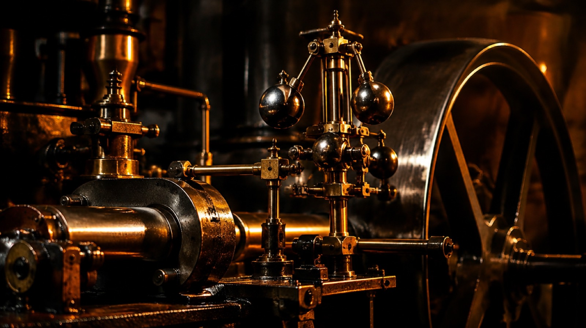
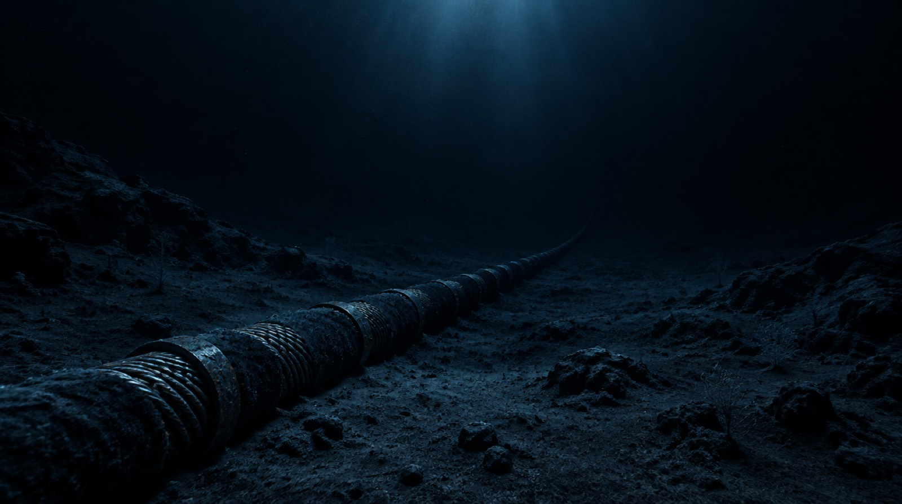
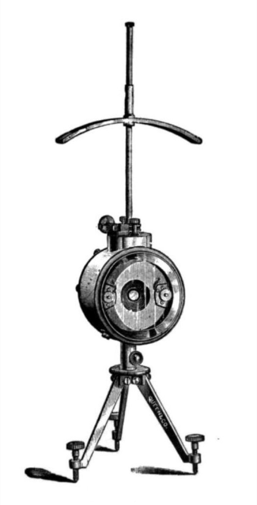
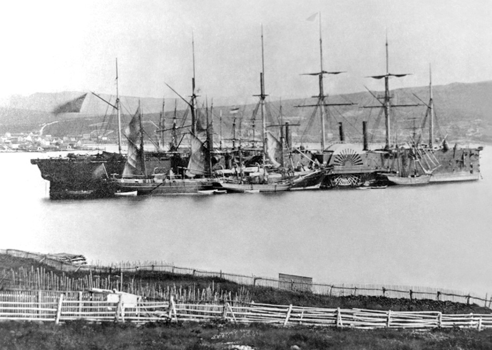
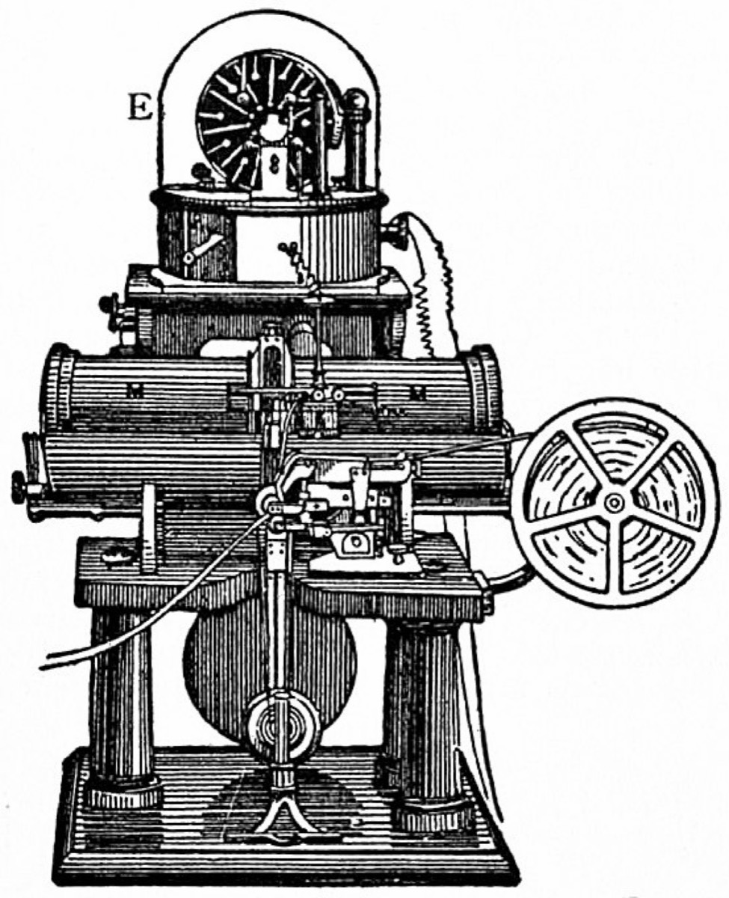
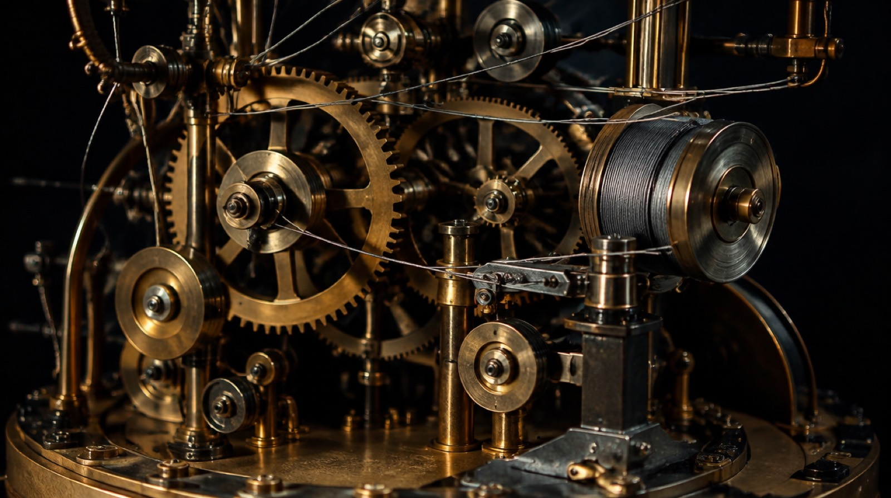
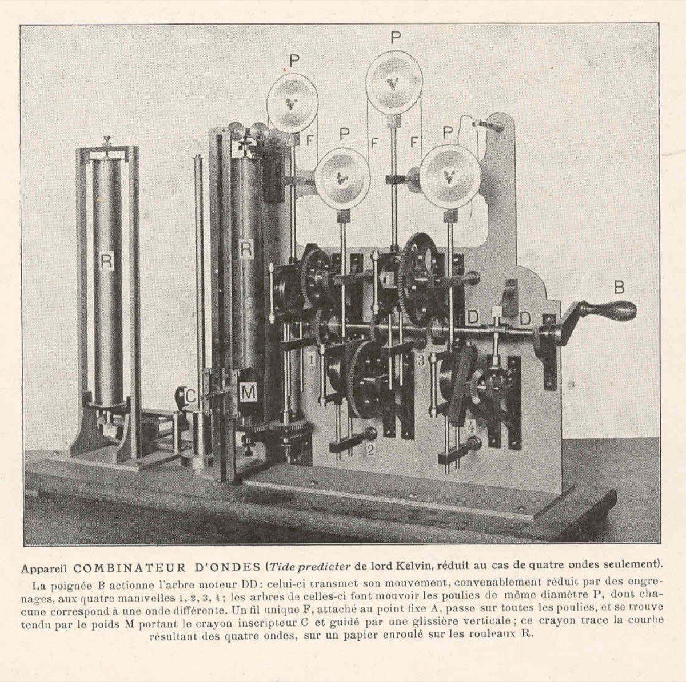

William Thomson · 1824–1907
KELVIN
The man who found the bottom of temperature
Kelvin in 60 seconds
- Born
- Belfast, 26 June 1824
- Prodigy
- Professor of Natural Philosophy at Glasgow — at age 22
- Physics
- Gave us absolute temperature and the kelvin itself
- Law
- Stated the Second Law of thermodynamics, 1852
- Engineer
- Made the transatlantic telegraph work — knighted for it in 1866
- Wrong
- Got the age of the Earth badly wrong, by a factor of ~50
Buried in Westminster Abbey, beside Newton.
Act I · The making of a physicist
Belfast to Glasgow, by way of a prodigy
Act I · The making of a physicist
The world that made him
Act II · The physics
The scale with a bottom
In 1848, Kelvin threw out the thermometer and defined temperature from a heat engine instead — and the ratio he found had nowhere to go below zero.
Temperature had no agreed lower bound. Every thermometer measured some substance's own behaviour — mercury's length, a gas's pressure — and different substances disagreed with each other away from the points where they happened to be calibrated together. There was no reason to think "cold" had a bottom at all.
Kelvin's 1848 paper, "On an Absolute Thermometric Scale Founded on Carnot's Theory of the Motive Power of Heat," sidestepped the substance problem entirely. Sadi Carnot had shown that an ideal heat engine's efficiency depends only on the temperatures of its two reservoirs — not on whether it runs on steam, air, or anything else. Kelvin used that fact to define temperature itself, independent of any material.
The result was a scale with a floor. Since no engine can be more than 100% efficient, the ratio Kelvin defined implies a coldest possible temperature — the point at which a perfect engine would extract all the heat as work. He placed it at −273.15 °C. Every kelvin above that is exactly one Celsius degree wide; only the zero point moved.
The physics
A reversible (Carnot) engine moves heat Q₁ out of a hot reservoir and Q₂ into a cold one while doing work. Carnot's theorem says the ratio Q₁⁄Q₂ is the same for any reversible engine running between the same two reservoirs — it can only depend on the reservoir temperatures. Kelvin defined temperature to make that ratio explicit:
That equation alone fixes a scale, up to one free constant (the size of a degree) and one free zero point — no mercury, no alcohol, no calibration substance required. Because an engine's efficiency η = 1 − Q₂⁄Q₁ can never exceed 1, T can never go below zero on this scale:
Since the SI redefinition of 2019, the kelvin no longer depends on any physical sample at all — it is fixed by the Boltzmann constant, k = 1.380649×10⁻²³ J/K, exactly.
vrms (N₂) ≈ 517 m/s
What this shows: each dot is a nitrogen molecule; its drift speed is drawn from KelvinPhysics.vRms at the selected temperature. Drag the scale or tap a landmark — motion visibly stops as the temperature approaches 0 K.
Four samples of gas, each a different amount, so each line has a different slope. Solid where it's measured; dashed where it's extrapolated into the cold, past where any real gas would have liquefied.
What this shows: KelvinPhysics.charlesVolume(T, slope) plotted for four different slopes at once. Drag the control — every slope changes, but the line always crosses zero volume at exactly −273.15 °C. That shared crossing point is how Kelvin located absolute zero without ever reaching it.
Illustration.
Act II · The physics
The Second Law
Heat never flows uphill on its own — and that one quiet rule sets a hard ceiling on every engine that has ever been built.
Heat was caloric — a weightless, indestructible fluid that flowed from hot bodies to cold ones and was simply conserved, the way water finds its level. "Energy" was not yet a unifying idea joining heat, motion and work together.
In 1851, Kelvin stated what a heat engine can never do: run in a cycle, draw heat from a single reservoir, and turn all of it into work with nothing else changing. Rudolf Clausius had stated an equivalent rule from the other direction: heat never passes from a colder body to a hotter one by itself. The two statements describe the same law from opposite sides.
The following year, in "On a Universal Tendency in Nature to the Dissipation of Mechanical Energy," Kelvin pushed the idea further: every real process loses some usable energy as heat that can never be fully recovered as work. Run that forward across the whole universe and you get an unsettling prediction — a slow, one-way drift toward a state where nothing more can happen: the "heat death" of the universe.
No engine, working in a cycle, can take heat from a single reservoir and convert all of it into work with no other effect. Some heat always has to be dumped somewhere colder.
Heat never flows from a colder body to a hotter one on its own. Making it happen — as a refrigerator does — always costs outside work.
The physics
Run a reversible engine between a hot reservoir at Th and a cold one at Tc — both absolute, in kelvin — and its efficiency has a hard ceiling set by nothing but those two temperatures:
Because Tc can never be negative, η can only reach 1 if Tc = 0 K — and chapter 03 already showed absolute zero is a limit nothing ever reaches. Every real engine, forever, leaks some heat to its surroundings instead of converting all of it to work. That unavoidable leak is the "dissipation" in Kelvin's 1852 title.
No net work here — the "cold" reservoir isn't colder than the hot one.
What this shows: KelvinPhysics.carnotEfficiency(T_h, T_c) drawn live as the width of the work arrow (top) against the two heat arrows either side of the engine. Drag T_c toward zero — efficiency climbs toward 100%, but never arrives, because T_c itself can never reach 0 K.

Illustration.
Act II · The physics
Joule–Thomson
Push a real gas through a plug from high pressure to low, and — unlike the ideal gas of a textbook — its temperature actually moves. Which way depends on one number.
Gases were assumed to behave ideally — their temperature indifferent to pressure alone with nothing else changing. There was no known, practical route to liquefying air, and refrigeration beyond ice and salt was barely a science at all.
Kelvin met James Prescott Joule, a Manchester brewer's son the physics establishment was largely ignoring, at a British Association meeting in 1847. The friendship that followed produced, in 1852, the Joule–Thomson effect: force a real gas through a porous plug or valve — a throttle — from high pressure to low, with no heat exchanged and no work extracted, and its temperature changes anyway. An ideal gas would not notice. A real one does, because real molecules pull on each other.
Whether the gas cools or warms depends on its temperature going in, relative to a threshold called the inversion temperature. Below it, throttling cools the gas — the working principle behind every modern refrigerator, air liquefier, and the liquid-helium magnet inside an MRI scanner.
The physics
Modelling the gas with the van der Waals equation, the Joule–Thomson coefficient — how much the temperature moves per unit drop in pressure, at constant enthalpy — works out to:
μJT is positive — cooling — whenever T is below the inversion temperature, and negative — heating — above it. That threshold falls out of the same expression:
For the nitrogen modelled below (van der Waals a = 0.1408 Pa·m⁶/mol², b = 3.913×10⁻⁵ m³/mol, Cp ≈ 29.1 J/(mol·K)), that threshold works out to ≈ 866 K — well above room temperature, which is why throttling nitrogen at ordinary starting temperatures cools it.
ΔT ≈ 0.00K for a representative pressure drop · inversion temperature ≈ 866K
Modelling nitrogen (N₂) as a van der Waals gas.
What this shows: particles cross the porous plug from high pressure (left) to low pressure (right); their speed after crossing is drawn from the sign and size of KelvinPhysics.jouleThomsonCoefficient at the chosen inlet temperature. Drag the slider through ≈866 K and watch the state flip from cooling to heating.
Act II · The physics
3,000 km of copper
The map made it look like an engineering problem. The physics was a differential equation — and getting the physics right is the difference between a cable that died within weeks and one that made him a knight.
A signal placed on one end of a wire was assumed to arrive at the other end effectively instantly, the way it does on a short line. No one had reckoned with 3,000 kilometres of cable acting as one continuous capacitor and resistor at once — or with how badly that combination would blur a signal over such a distance.
The first transatlantic cable, laid in 1858, worked only briefly. Its chief electrician, Wildman Whitehouse, refused to believe retardation was a real physical effect and drove the line with brutally high induction-coil voltages to try to force signals through faster — voltages that destroyed the cable's insulation. Kelvin's approach for the second attempt, laid successfully in 1866, was the opposite: tiny, safe currents, paired with a detector sensitive enough to read them anyway. It worked. He was knighted that same year, and the patents that followed made him rich.

Illustration.
The physics
A long submarine cable behaves like a distributed resistor-capacitor line: every metre of copper core has resistance, and every metre of insulated cable sitting in the ocean is a tiny capacitor against the seawater around it. A signal doesn't arrive as a sharp step — it diffuses in, the same mathematics Fourier used for heat spreading down a bar. The delay to reach a useful fraction of full strength scales as:
— the law of squares. Double the cable's length and the delay does not double. It quadruples. That single relationship is why the geometry of the Atlantic made this a genuinely hard problem and not just a long one — and why Whitehouse's brute-force voltage made things worse rather than better: more voltage doesn't fight diffusion, it just stresses the insulation.
What this shows: KelvinPhysics.cableStepResponse traced along the cable's length at the current simulated instant, using representative mid-19th-century values for resistance (~2 Ω/km) and capacitance (~0.4 µF/km). Double the length and press Send again — the delay quadruples: the law of squares, live.
Getting a signal down the cable was only half the problem. On the receiving end, that smeared, barely-there trickle of current had to be read at all. Kelvin's answer was the mirror galvanometer — an "optical lever" sensitive enough to turn a current far too small to feel into a spot of light anyone could read.
The physics — the mirror galvanometer
A tiny mirror, suspended on a fine fibre inside a magnet coil, tilts by an angle proportional to the current through the coil: θ = current × sensitivity. Because the angle of incidence equals the angle of reflection, tilting the mirror by θ swings the reflected beam by twice that — 2θ — before the beam even leaves the mirror. Send that doubled angle down a long "arm" to a distant scale, and a swing far too small to read directly becomes a spot of light anyone can see move:
The long arm and the angle-doubling are two independent multipliers stacked on top of each other — which is how a submarine cable's microamp-scale trickle became a legible signal at all.
What this shows: a current tilts a tiny mirror by θ = current × sensitivity; because the angle of incidence equals the angle of reflection, the reflected beam swings by 2θ (KelvinPhysics.galvanometerDeflection) — doubling the effect before it even reaches the long arm to the scale. "Play message" keys the mirror in real Morse code and decodes it live above.

Historical photograph — Thomson's mirror galvanometer. Public domain, Wikimedia Commons.

Historical photograph — the Great Eastern, which laid the successful 1866 cable. Public domain, Wikimedia Commons.

Historical illustration — Kelvin's early siphon recorder, from the 1911 Encyclopædia Britannica. Public domain, Wikimedia Commons.
Act II · The physics
The instruments
Roughly seventy patents came out of one restless mind — a compass, a sounder, a bridge circuit, a recorder. Two of them are showpieces: a generator with no battery, and a brass machine that predicts the tide.
Tide tables were built by tedious manual harmonic analysis, redone by hand for every port, or by local rules of thumb that broke down anywhere they hadn't been measured directly. There was no machine that could simply add up a tide's ingredients and trace the answer.
Between the cable years and his death, Kelvin patented roughly seventy inventions: a mariner's compass corrected to work on iron-hulled ships and adopted by the Royal Navy; a sounding machine that read ocean depth without stopping the ship; the Kelvin bridge, for measuring very low resistances; the siphon recorder, which inked incoming cable signals onto paper automatically. Two of the instruments below repay a closer look, because each one makes an abstract idea physically watchable.
Illustration.
The physics — the water dropper
Two streams of water drops fall through metal induction rings on their way to two collecting cans — but each ring is wired not to the can below it, but to the opposite can. Any tiny, accidental charge imbalance between the two sides induces a charge on the drops falling through the nearer ring, and because of the cross-wiring, those drops carry that charge into the can that reinforces the original imbalance. The imbalance grows the very drops that grow it — positive feedback — and it runs away exponentially until a spark discharges it:
τ is the feedback time constant, set by the drop rate. There is no battery anywhere; the entire voltage comes from induction feeding on itself.
What this shows: KelvinPhysics.dropperVoltage(t, τ) climbing in real time from the cross-connected induction rings; the brass flash is the spark that discharges it, after which the cycle restarts from zero. Faster drop rate, shorter τ, quicker sparks.
The physics — the tide-predicting machine
The tide at a given port is, to good approximation, a sum of independent sinusoidal "constituents" — one driven by the Moon's dominant pull, one by the Sun, others by the small elliptical wobbles of each orbit — each with its own fixed period and a locally measured amplitude:
Kelvin's machine synthesised that sum mechanically, one pulley per constituent, decades before anyone had an electronic computer to add sine waves for them. Below, with only M2 raised (the Moon's main constituent, period 12.42 h) and S2 (the Sun's, period 12.00 h) — two frequencies close enough together to beat against each other — a slow spring/neap rhythm appears in the sum that neither constituent has on its own.
What this shows: KelvinPhysics.tideSum of the six real tidal constituents, traced over 30 days. With only M2 and S2 raised (the default above), the spring/neap envelope emerges entirely from two steady sine waves at close frequencies — KelvinPhysics.beatPeriod puts that cycle at 14.77 days, matching the real ≈14.77-day spring/neap cycle. Raise the other four constituents to see the curve gain the finer texture of a real tide table.

Illustration.

Historical illustration — a contemporary depiction of Kelvin's tide-predicting machine, reduced to four constituents. Public domain, Wikimedia Commons.
Act III · The limits
Where Kelvin was wrong
Act III · The limits
Two clouds
Act III · The limits
The quote he never said
Act IV · The man
The man himself
Act IV · The man
His circle
Act IV · The man
Honours and legacy
The full timeline
Timeline, 1824–1907
Sources & references